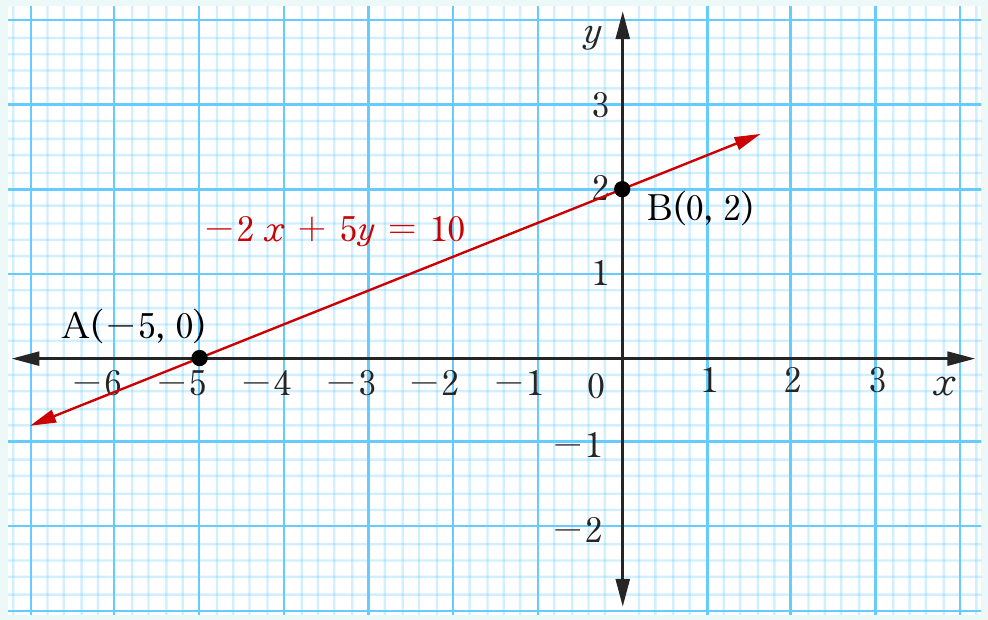

Locate the two points (0, 2) and (–5, 0) on the xy-plane and join them to obtain the straight line.

A(–5, 0)
B(0, 2)
Engage in Activity 6.3 and learn how to use graphing software in graphing linear equations.
Activity 6.3: Graphing linear equations using graphing tools
Write 5 linear equations of your choice and use a graphing software of your choice to draw their graphs.
Exercise 6.6
1.
Use a table of values to draw the graph of and hence determine the and -intercepts.
2.
Draw a graph for each of the following equations.
(a)
(b)
(c)
(d)
(e)
(f)
(g)